class: center, middle # EE-464 STATIC POWER CONVERSION-II # Bridge Converters ## Ozan Keysan ## [keysan.me](http://keysan.me) ### Office: C-113 <span class="meta">•</span> Tel: 210 7586 --- # Full Bridge Isolating Converter 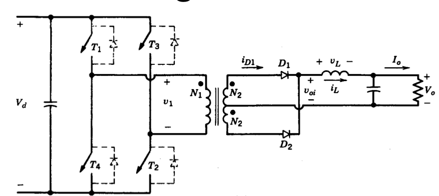 ### Compact solution for high power levels (>500W) ### Similar to push-pull converter --- ## Full Bridge Converter: Operating Modes -- 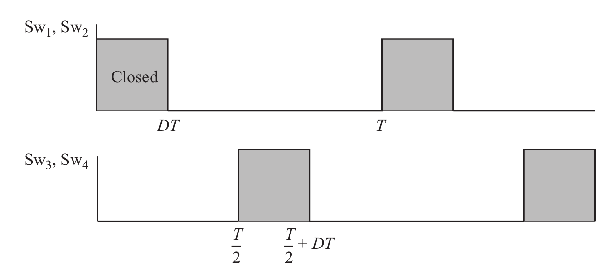 ### S1 & S2, S3 & S4 operate alternatively --- ## Full Bridge Converter: Operating Modes 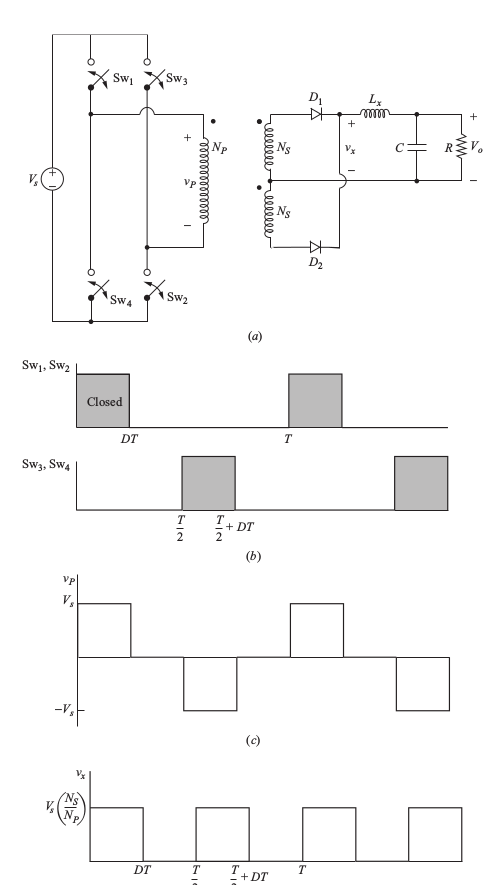 --- ## Full Bridge Converter # \\(V_o = 2 V_s (\dfrac{N_s}{N_p})D\\) ## \\(D < 0.5\\) ## Same with the push-pull converter --- # Half Bridge Isolating Converter 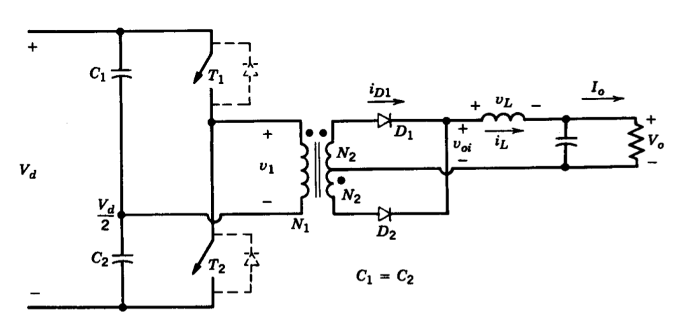 ### Derived from the Buck Converter ### S1, S2 turned on alternatively each for \\(t\_{on}\\), then both off for \\(\Delta\\) --- ## Half Bridge Converter: Operating Modes 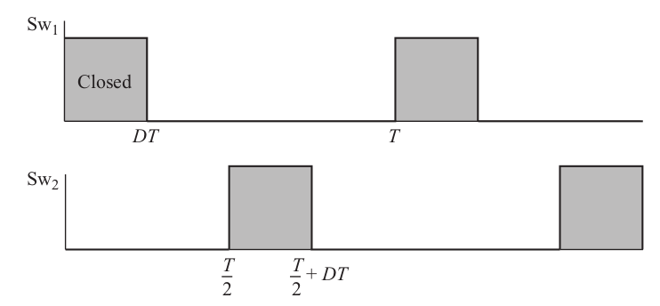 --- ## Half Bridge Converter: Operating Modes 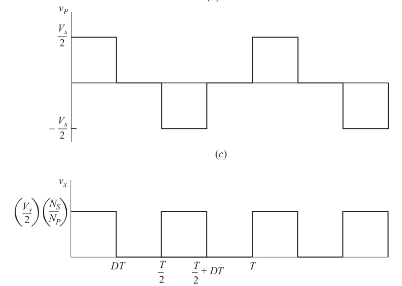 --- ## Half Bridge Converter # \\(V_o = V_s (\dfrac{N_s}{N_p})D\\) ## \\(D < 0.5\\) ## Half of the push-pull converter --- # Current Source Converter -- - ## Voltage Source Inverter (VSI): Fed by a voltage source (i.e. a capacitor large enough) -- - ## Current Source Inverter (VCI): Fed by a current source (i.e. an inductor large enough) --- # Current Source Converter <img src="./images/ee464/current_source_converter.png" alt="Drawing" style="width: 700px;"> ## Fed with constant source current (due to large source inductance) --- # Current Source Converter <img src="./images/ee464/current_source_converter.png" alt="Drawing" style="width: 800px;"> ## Same with push-pull, but the inductance moved to the source side --- # Voltage Source Converter: ## Do not turn both switches ON (to prevent short-circuit) -- # Current Source Converter ## Do not turn both switches OFF (to prevent open-circuit) --- # Current Source Converter: Operating Modes 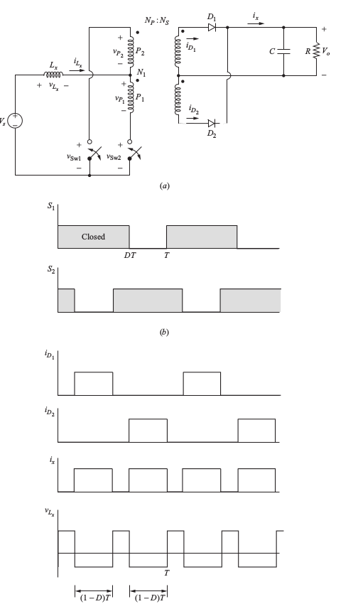 ## Notice the overlapping periods between switches --- # Current Source Converter: Operating Modes 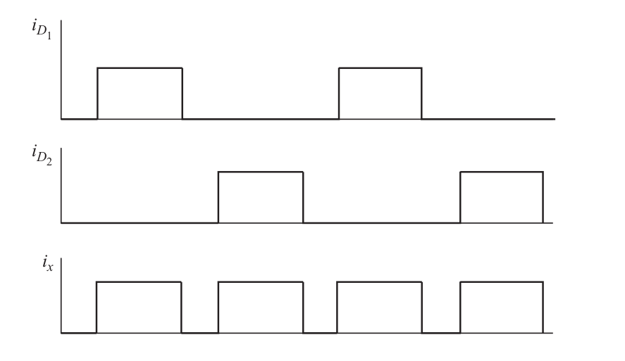 ## Diode currents are added at the output --- # Current Source Converter -- # \\(V_o = V_s (\dfrac{N_s}{N_p})(\dfrac{1}{2(1-D)})\\) ## \\(D > 0.5\\) # Operates as a: Boost Converter --- # PFC? -- ## Power Factor Correction -- ## Power Factor of a 1Ph Diode Rectifier? -- 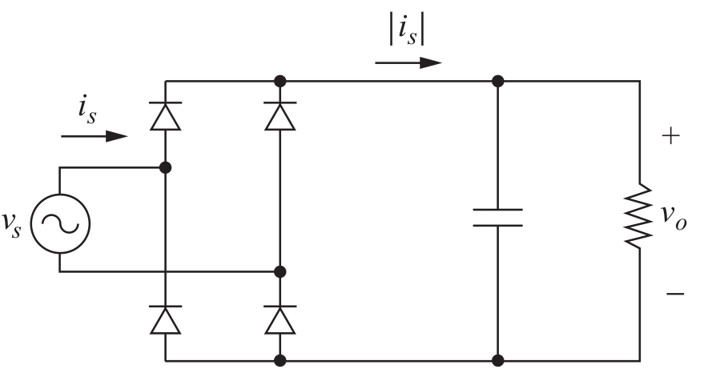 --- ## Diode Rectifier ### Source current 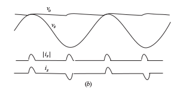 --- # PFC required for many applications -- - ### Computer Power Supplies, LED Drives -- - ### Arc Furnaces -- - ### Welding <img src="https://cdn11.bigcommerce.com/s-x3ki4mm/images/stencil/1280x1280/products/879/1198/Askaynak-inverter-405-welding-inverter__42671.1477329188.jpg" alt="Drawing" style="width: 300px;"> --- # PFC Circuit -- 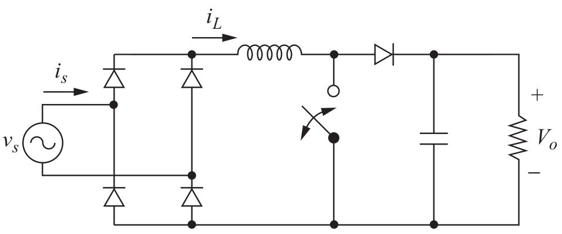 --- # PFC Current -- <img src="./images/ee464/pfc_current.png" alt="Drawing" style="width: 500px;"> --- # PFC Current ## Critical Current Mode (Discontinuous Current Mode) -- 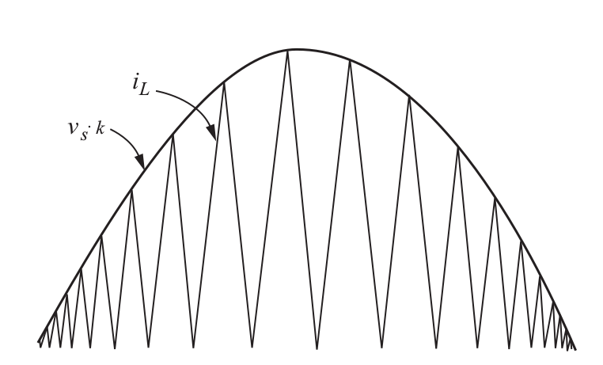 --- # PFC Effect -- <img src="https://toshiba.semicon-storage.com/content/dam/toshiba-ss-v2/master/en/semiconductor/product/power-management-ics/a3.gif" alt="Drawing" style="width: 800px;"> --- # PFC Alternatives: Bridgeless PFC #### Replaces diode bridge rectifier with 2 MOSFETS + 2 diodes <img src="./images/ee464/bridgeless_pfc.png" alt="Drawing" style="width: 600px;"> --- # PFC Alternatives: Bridgeless PFC #### Replaces diode bridge rectifier with 2 MOSFETS + 2 diodes <img src="./images/ee464/bridgeless_pfc_operation.png" alt="Drawing" style="width: 800px;"> ### [PFC Circuits](https://toshiba.semicon-storage.com/info/docget.jsp?did=68570) --- # PFC Alternatives: Totem-Pole Bridgeless PFC #### 2 MOSFETs in series (or 4 MOSFETS configuration) <img src="./images/ee464/totem_pole_pfc.png" alt="Drawing" style="width: 800px;"> --- # PFC Alternatives: Totem-Pole Bridgeless PFC <img src="./images/ee464/totem_pole_pfc_operation.png" alt="Drawing" style="width: 800px;"> ### [6.6-kW Totem-Pole PFC Reference](https://www.ti.com/lit/ug/tidue54b/tidue54b.pdf) --- # PFC Alternatives: Totem-Pole Bridgeless PFC <img src="./images/ee464/totem_pole_pfc_operation2.png" alt="Drawing" style="width: 800px;"> ### [6.6-kW Totem-Pole PFC Reference](https://www.ti.com/lit/ug/tidue54b/tidue54b.pdf) --- ## Commercial PFC Controllers -- - ### [Toshiba-TB6819AFG](https://toshiba.semicon-storage.com/tr/product/linear/power-supply/pfc-ic/pfc-crm-ic.html) - ### [OnSemi PFC Controllers](http://www.onsemi.com/PowerSolutions/parametrics.do?id=981) - ### [TI PFC Controllers](http://www.ti.com/power-management/offline-isolated-dcdc-controllers-converters/factor-correction/products.html#p1694=Single-phase%20PFC&p1131=CCM) - ### [TI UCC28180](http://www.ti.com/product/UCC28180/datasheet/abstract#SLUSBQ56054) --- ## PFC Application Study: Welding Circuit -- 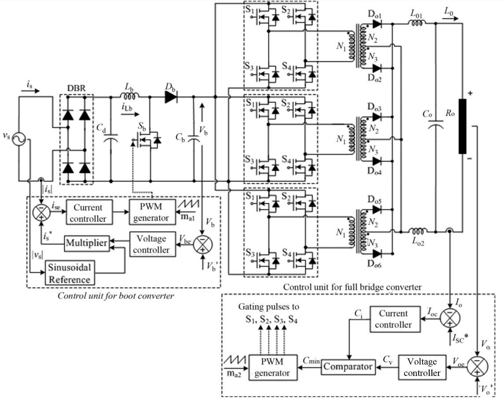 --- # Multi-Quadrant DC Converters <img src="https://www.kepcopower.com/hdbfig09.gif" alt="Drawing" style="width: 600px;"> --- # First Quadrant Converter ### (Type A Chopper) <img src="https://www.electrical4u.com/images/type-a-chopper.png" alt="Drawing" style="width: 600px;"> --- # Second Quadrant Converter ### (Type B Chopper) <img src="https://www.electrical4u.com/images/type-b-chopper.png" alt="Drawing" style="width: 600px;"> ### Io:negative --- # Two Quadrant Converter ### (Type C Chopper) <img src="https://www.electrical4u.com/images/type-c-chopper.png" alt="Drawing" style="width: 400px;"> ### Io:negative --- # First and Fourth Quadrant Converter 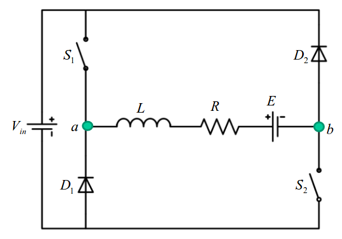 --- # Full-Bridge (Four Quadrant) DC-DC Converter 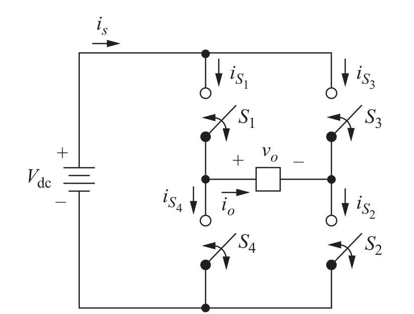 ## Simplified Circuit --- # Full-Bridge (Four Quadrant) DC-DC Converter 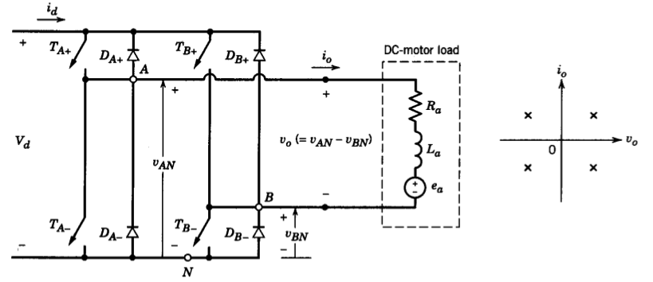 ## Suitable for four quadrant operation --- # Control of Full-Bridge Converter - ## Bi-polar Voltage Switching - ## Uni-polar Voltage Switching --- # Bi-polar Voltage Switching ### \\(T\_{A+}\\) and \\(T\_{B-}\\) are turn on and off together ### \\(T\_{A-}\\) and \\(T\_{B+}\\) are complimentary of \\(T\_{A+}\\) and \\(T\_{B-}\\) ## Output can be \\(+V\_d\\) or \\(-V\_d\\) --- # Bi-polar Voltage Switching 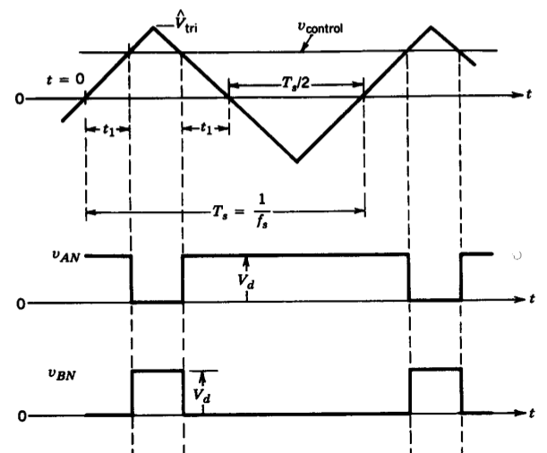 --- # Bi-polar Voltage Switching 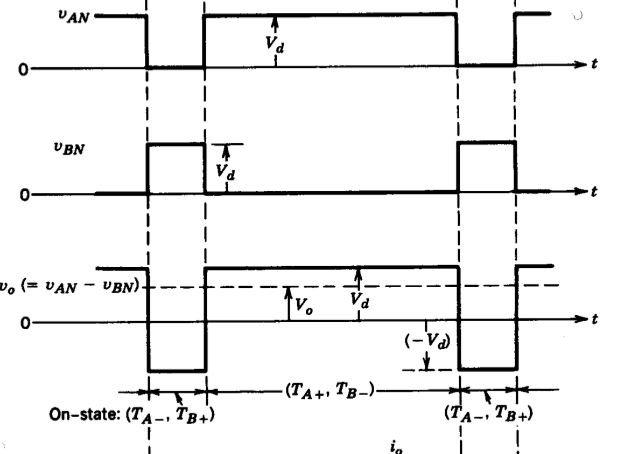 --- # Bi-polar Voltage Switching # \\(V\_o = V\_d \dfrac{v\_{control}}{\hat{V}\_{tri}}\\) --- # Uni-polar Voltage Switching ### \\(T\_{A+}\\) and \\(T\_{B+}\\) are controlled seperately ### \\(T\_{A-}\\) and \\(T\_{B-}\\) are complimetary of \\(T\_{A+}\\) and \\(T\_{B+}\\) -- ## Output can be \\(+V\_d\\) or \\(0\\) or \\(-V\_d\\) ## \\(V\_o = 0 \\) if \\(T\_{A+}\\) and \\(T\_{B+}\\) are ON ## \\(V\_o = 0 \\) if \\(T\_{A-}\\) and \\(T\_{B-}\\) are ON --- # Uni-polar Voltage Switching 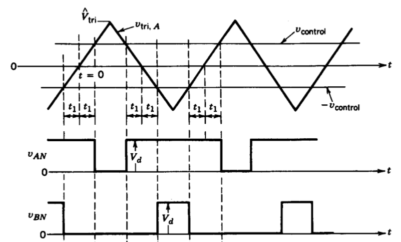 --- # Uni-polar Voltage Switching <img src="./images/ee464/unipolar2.png" alt="Drawing" style="width: 700px;"> --- # Uni-polar Voltage Switching # \\(V\_o = V\_d \dfrac{v\_{control}}{\hat{V}\_{tri}}\\) -- # So, what's the point? --- # Ripple Comparison ### Homework: Mohan Example 7.4 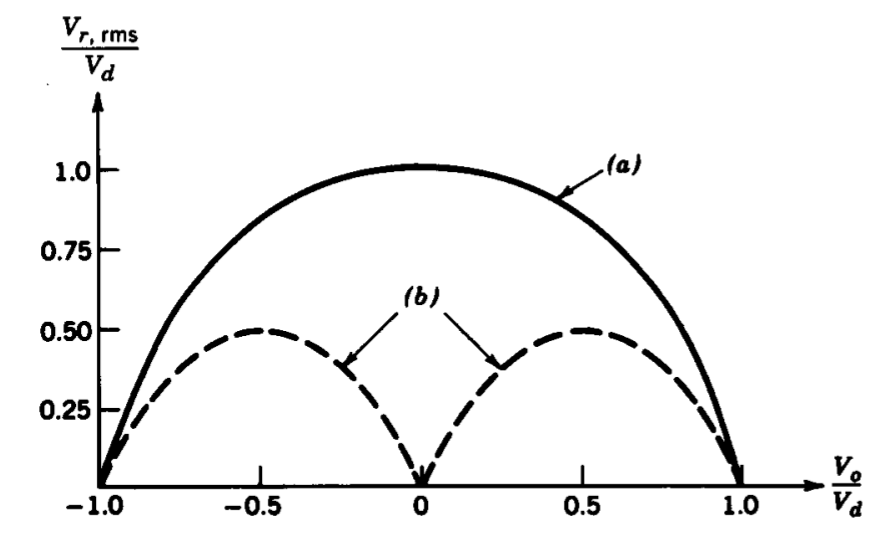 ### a) Bipolar PWM, b) Unipolar PWM --- # Dead Time (Blanking Time) <img src="https://cdn.hackaday.io/images/1427301433803767342.png" alt="Drawing" style="width: 650px;"> ### Off periods are added to compensate with non-zero turn-off time --- # Dead Time ## Introduces non-linearity between Vref and Vo. ## Pulses shorter than dead-time will be omitted (introduce harmonics) ## Vref can be increased to compensate for the off period. --- ## Full Bridge as a DC Converter <img src="https://cdn.hackaday.io/images/103221433788687643.png" alt="Drawing" style="width: 650px;"> ### Operate it with Constant Reference Voltage --- ## Full Bridge as an Inverter -- ## Just change the reference voltage with a sinusoid <img src="https://i.stack.imgur.com/KLyAy.png" alt="Drawing" style="width: 800px;"> --- ## Full Bridge as an Inverter <img src="https://i.stack.imgur.com/bBNPA.gif" alt="Drawing" style="width: 800px;"> ### Will be covered in detail in the following weeks <!-- # Comparison of DC/DC Converters ## Buck, boost, buck-boost, Cuk conveters all supply power in one direction ## Full-bridge is capable of working in four quadrants (bidirectional power flow) # Switch Utilization 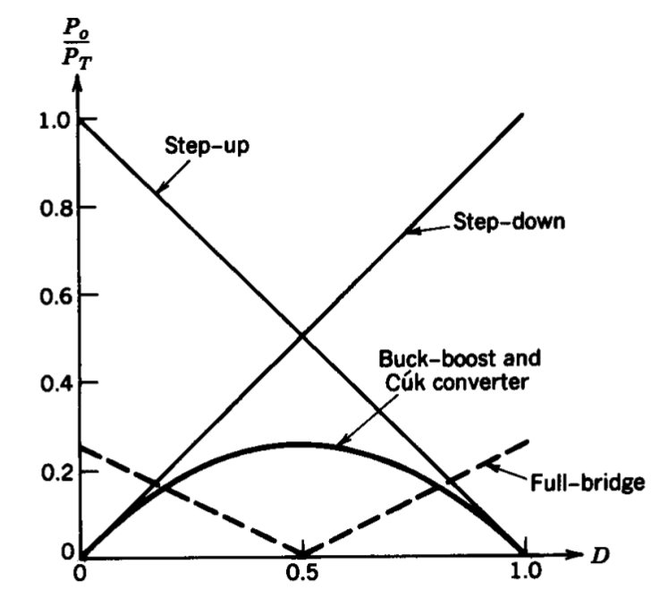 --> --- ## You can download this presentation from: [keysan.me/ee464](http://keysan.me/ee464)